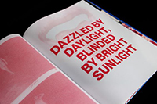
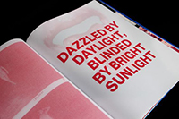

CONTEMPORARY ART
DEFINE „INDEFINABLE"
 

Contemporary art is the art of today, produced by artists who are living in the twenty-first century. It provides an opportunity to reflect on contemporary society and the world around us. Diverse and eclectic, contemporary art as a whole is distinguished by the very lack of a uniform, organizing principle, ideology, or ‘ism.’ Contemporary art is part of a cultural dialogue that concerns larger contextual frameworks such as personal and cultural identity, family, community, and nationality. Artwork from this category spans all genres, from painting and film to sculpture, digital art, performance art, installations, photography, fashion and everything in between. These works of art also span a wide range of mediums and include numerous subcategories. Contemporary art is as much an experiment in processes as i tis type of art.
Contemporary artists work in a globally influenced, culturally diverse, and technologically advancing world. Their art is a dynamic combination of materials, methods, concepts, and subjects that challenge traditional boundaries and defy easy definition. Artwork from this category spans all genres, from painting and film to sculpture and everything in between. These works of art also span a wide range of mediums and include numerous subcategories. Contemporary art is as much an experiment in processes as it is type of art.
Whether influenced by or grounded in performance art, pop art, Minimalism, conceptual art, or video, contemporary artists pull from an infinite variety of materials, sources, and styles to create art. For this reason, it is difficult to briefly summarize and accurately reflect the complexity of concepts and materialsused in this kind of art.
MY FAVOURITE CONTEMPORARY ARTIST
Robert Montgomery follows a tradition of conceptual art and stands out by bringing a poetic voice to the discourse of text art. Montgomery creates billboard poems, light pieces, fire poems, woodcuts and watercolors. He was the British artist selected for Kochi-Muziris Biennale 2012, the first biennale in India. Montgomery has had solo exhibitions at venues in Europe and in Asia, including major outdoor light installations on the site of the old US Air Force base at Tempelhof. The first monograph of his work was published by Distanz, Berlin in 2015.
"To encounter the work of Robert Montgomery is to make a tender encounter whose tenderness is enhanced by the public, communal quality of his work. To encounter his work is to have your body filled with a sad thunder and your head filled with a sad light. He is a complete artist and works in language, light, paper, space. He engages completely with the urban world with a translucent poetry. His work arrives at us through a kind of lucid social violence. No one has blended language, form and light in such a direct way."
- Dane Weatherman. Black & Blue Journal
"Yes to this, and yes again. It's democratic art and democratic literature. I'd love to see (more of) it here in Britain."
- Edward Lucie-Smith
Read more about Robert and check his artworks (click the link below)